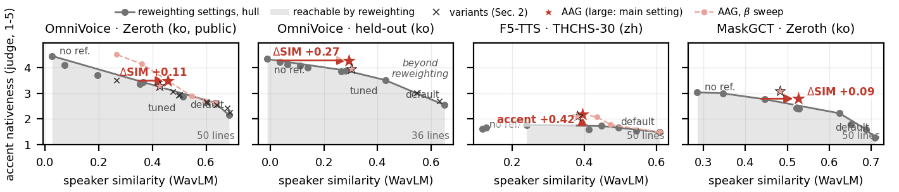

Removes the reference speaker's accent from a cloned voice and keeps the speaker. Training-free, one extra term in the sampler.
ESTsoft, Seoul
arXiv preprint in processing. Code and proxy sets will be released in the repository.
In cross-lingual zero-shot text-to-speech, the accent of the reference leaks into the target speech. We propose accent analogy guidance (AAG), a training-free sampler term that subtracts an accent direction estimated from the model's own predictions for one synthetic voice rendered in both languages, so the voice cancels and only the accent remains. By a blind LLM accent judge on real dubbing data, reweighting classifier-free guidance between reference and text, and its variants, stay near one identity–accent trade-off curve; we score a method by its speaker similarity above that curve at equal accent (ΔSIM). Across four open TTS models AAG lies above the curve: on OmniVoice ΔSIM is +0.11 to +0.27 on three test sets (accent 3.51 to 4.28 on a 1–5 scale at speaker similarity 0.29, where reweighting keeps 0.02); MaskGCT and CosyVoice 2 also lie above their curves, and on F5-TTS it is more native than any reweighting setting. An LLM-free language-ID measure and a twelve-listener panel agree. A premise test and the reach of a model's own curve indicate in advance whether and roughly how much AAG can gain, predicting the one model where it gains nothing (X-Voice).
“The global economy grew based on consumption in developed countries, including the US, until the US subprime crisis in two thousand seven.”

Same line, different settings. Under each header: set mean accent (1–5) · speaker similarity.
| target text | Korean referenceaccent · SIM | default (3,3)2.15 · 0.69 | tuned (2,5)2.86 · 0.51 | AAG (3,5,5)3.49 · 0.46 | no reference (not the speaker)4.45 · 0.03 |
|---|---|---|---|---|---|
| Every month, the support money comes in, so the financial pressure is also reduced. | |||||
| The global economy grew based on consumption in developed countries, including the US, until the US subprime crisis in two thousand seven. | |||||
| And they called in as many as forty-six people involved and questioned them. | |||||
| While no specific explanation was given, he said he received the documents for the foundation's establishment from Jeong Ho-seong and handed them to An Jong-beom. | |||||
| The Oceans Ministry says the bow lifting was suspended because of unexpected swells, and not an equipment issue. |
| target text | Korean referenceaccent · SIM | reweighting (1.5,5)3.43 · 0.37 | AAG (3,5,5)3.49 · 0.46 |
|---|---|---|---|
| Interestingly, Paul provided specific instructions to wealthy people. | |||
| If President Park Geun-hye truly reaches out, what choice will Representative Ahn Cheol-soo and the People's Party make? | |||
| On Earth, there are probably almost no places as different from each other as Ukraine and Uganda. | |||
| I don't expect any problems, and if I find a member causing trouble like that, we'll just kick them out of Bak-sa-mo. | |||
| He added that while he was careful to avoid overstating the workout's implications, it was indeed true that their financial structure had worsened due to failed investments in business diversification. |
| target text | Chinese referenceaccent · SIM | default (3,3)1.17 · 0.75 | tuned (2,5)1.93 · 0.56 | AAG (3,5,5)2.32 · 0.57 | no reference (not the speaker)3.09 · 0.01 |
|---|---|---|---|---|---|
| This power station will feature five units, with a two million kilowatt total capacity, and an average annual output of five point nine billion units. | |||||
| That brush Yang Shaoye brought back from Korea was thrown into the wastepaper basket by the young lady, and my mother didn't notice it was gone for a while. | |||||
| Back in Gaomu Village, with its seven hundred residents, over two hundred were bachelors, and the villagers were so poor they didn't even have money for salt or oil. | |||||
| From the Opium Wars to the Qing government's collapse, foreign indemnities alone totaled nearly one point three billion taels of silver. |
| target text | Chinese referenceaccent · SIM | default (3,3)1.49 · 0.61 | most native reweighting (1,5)1.76 · 0.24 | AAG (2,5,2)2.12 · 0.38 | AAG (3,3,5)2.18 · 0.39 |
|---|---|---|---|---|---|
| From the Opium Wars to the Qing government's collapse, foreign indemnities alone totaled nearly one point three billion taels of silver. | |||||
| The National Coal Conference was strictly disciplined and free from outside interference, making it a highly efficient meeting. | |||||
| Meanwhile, powdered feed has also been replaced by pellets, but in our rural areas, they're still using less nutritious mixed feed. | |||||
| Tourism is one of Spain's main foreign currency sources, while also creating many jobs. |
| target text | Korean referenceaccent · SIM | default (3.5,3.5)1.28 · 0.71 | most native reweighting3.04 · 0.28 | AAG (2.5,5,3.5)2.79 · 0.53 | AAG (1.5,5,2)3.10 · 0.48 |
|---|---|---|---|---|---|
| It got to the point where people were saying we'd become a safe zone, not the heart of the crisis. | |||||
| Even so, many people still believe Duncan lost his life to Bugatti. | |||||
| Police reported that at the time of the arrest, there was also a child born in two thousand fifteen, believed to be Jeong's son. | |||||
| But written or phone reports aren't really two-way communication; they're largely one-sided instructions. |
| target text | Korean referenceaccent · SIM | β = 02.63 · 0.63 | β = 32.89 · 0.55 | β = 53.49 · 0.46 | β = 6.54.14 · 0.36 | β = 84.51 · 0.27 |
|---|---|---|---|---|---|---|
| We're also preparing to establish a much-needed medical foundation for farmers. | ||||||
| So, here, they taught that you don't have to pay back money borrowed from a sex trade owner. |
@misc{cho2026aag,
title = {Accent Analogy Guidance: More Speaker Similarity at Equal Accent in Cross-Lingual Voice Cloning},
author = {Cho, Yoomee and Lee, Jisun},
year = {2026},
note = {Submitted to ICASSP 2027; arXiv preprint to follow}
}